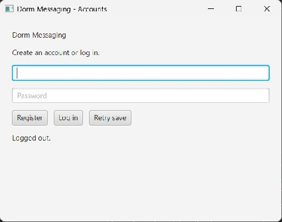

- In the Community window, click Log out.
- The Community window closes and the Accounts window returns.
- Look for Logged out. in the status area. Another resident can now log in.

Closing the Community window also logs you out. Draft post and reply text is cleared on logout.